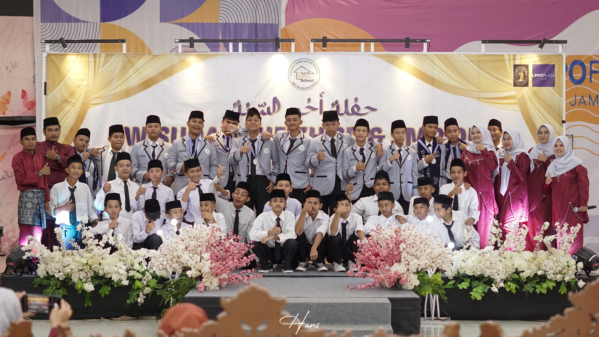
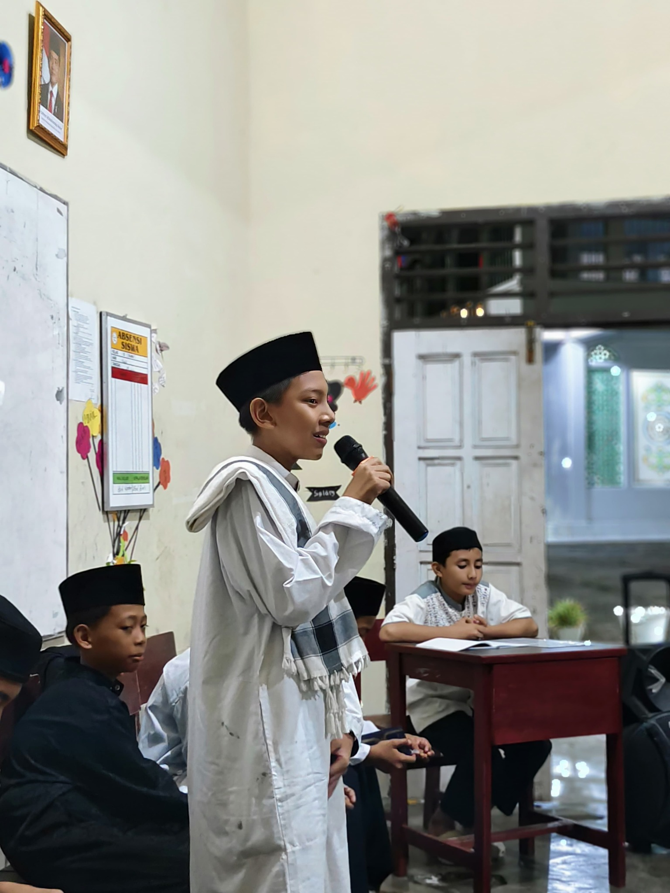
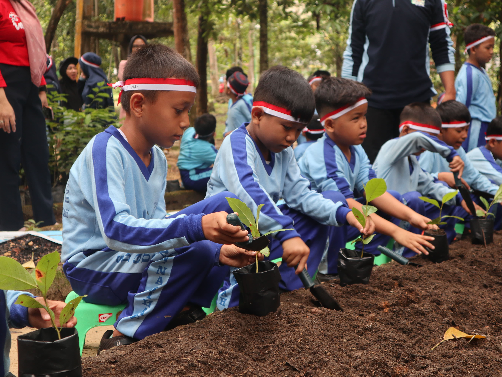
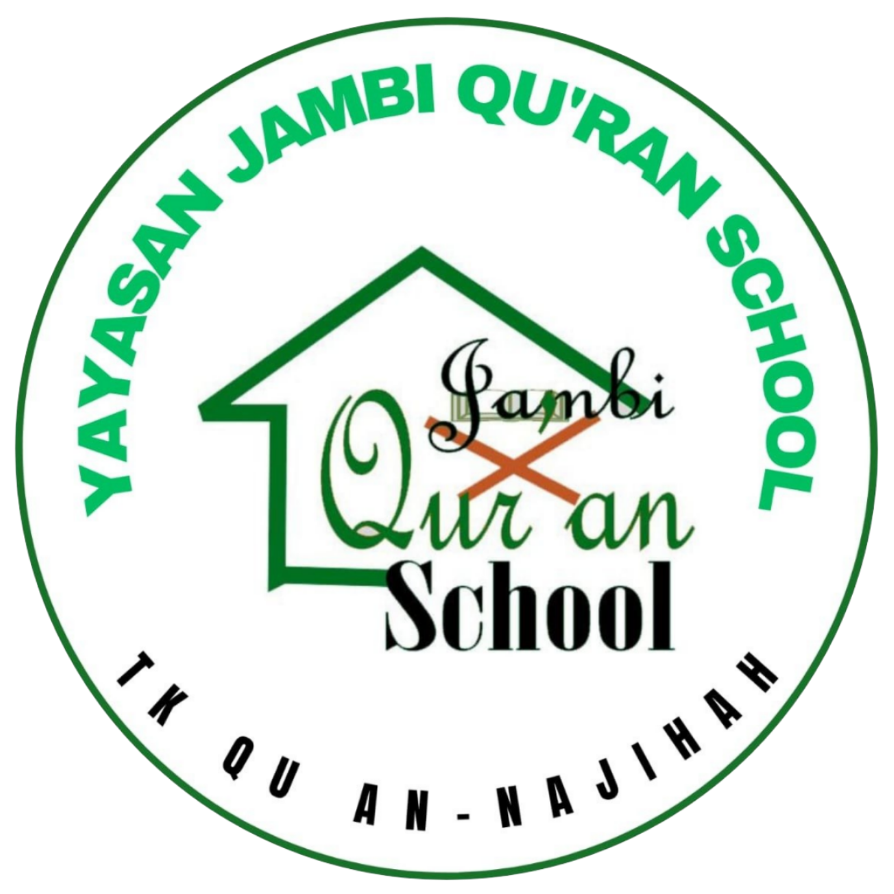
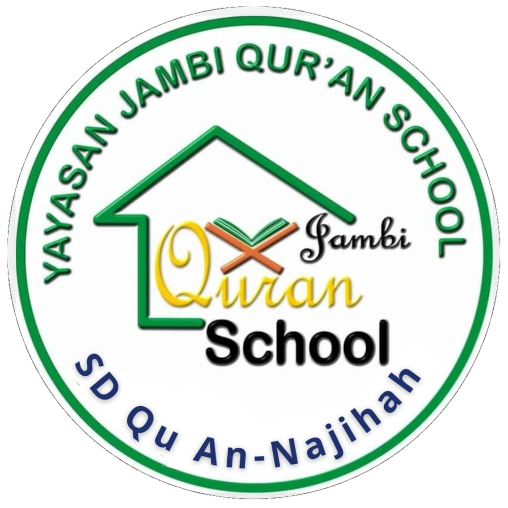
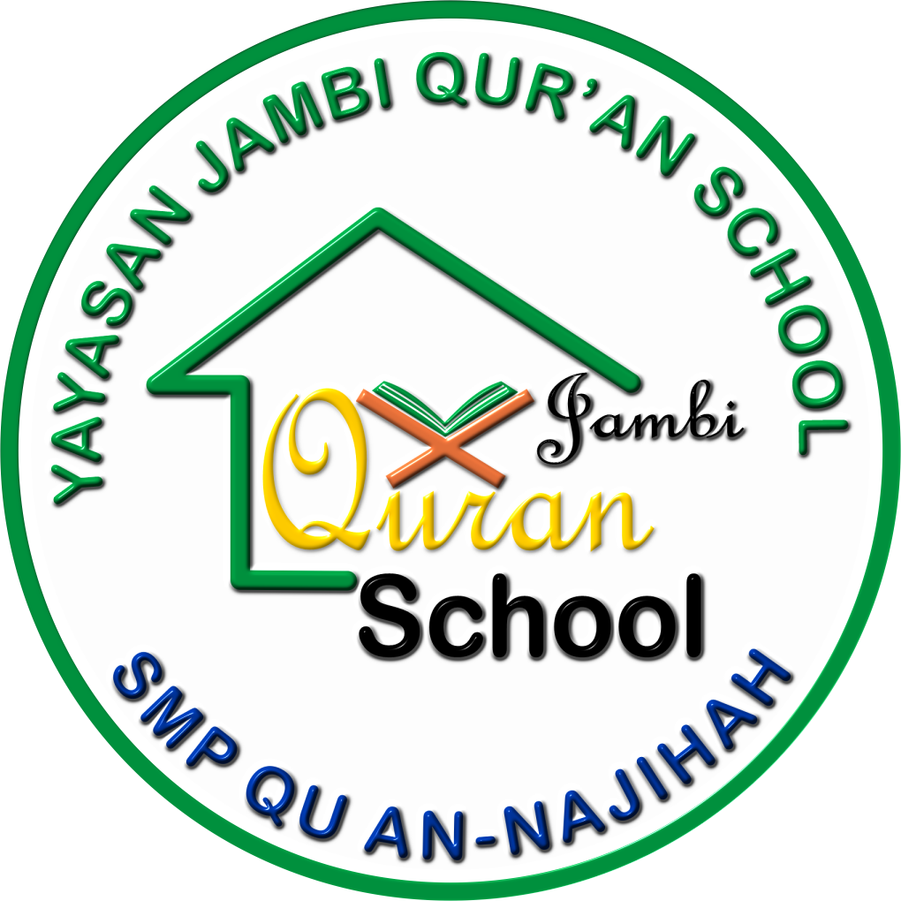

Galeri Kegiatan
Momen Berharga
di Jambi Qur'an School




Yayasan Jambi Qur'an School hadir untuk mengembangkan kemampuan membaca, memahami, dan mengamalkan Al-Qur'an dengan metode pembelajaran yang efektif dan berlandaskan nilai-nilai Islam.
Kami menyediakan sistem pendidikan Al-Qur'an yang terintegrasi untuk membentuk generasi Qur'ani secara berkelanjutan, didukung pengajar berpengalaman dan metode pembelajaran yang interaktif.

Program pendidikan usia dini yang menggabungkan calistung dan pembelajaran Al-Qur’an, sehingga anak mampu membaca sejak dini sekaligus mengenal Al-Qur’an dengan menyenangkan.

Program pendidikan dasar yang menguatkan kemampuan membaca dan memahami Al-Qur’an sekaligus membangun fondasi akademik dan karakter Islami sejak dini.

Program lanjutan untuk memperdalam pemahaman Al-Qur’an serta membentuk remaja yang berakhlak, mandiri, dan siap menghadapi tantangan masa depan.
Program pembelajaran terbuka untuk umum dari usia 4 hingga 60 tahun, dengan beragam pilihan seperti cepat baca Qur’an, tahsin, tahfiz, tilawah, bahasa Arab, dan Qur’an Integrated.
Lebih dari sekadar belajar, kami mendampingi anak tumbuh menjadi pribadi yang dekat dengan Al-Qur'an dan berakhlak mulia.
Didampingi oleh pengajar yang berpengalaman dan berkomitmen dalam mendidik serta telah mengikuti pelatihan pedagogi modern secara berkala.
Siswa kami didukung untuk berkembang dan meraih berbagai pencapaian dalam bidang akademik maupun Al-Qur’an.
Menanamkan akhlak mulia seperti kejujuran, tanggung jawab, dan kepedulian melalui pembiasaan dalam kehidupan sehari-hari.



Percayakan pendidikan putra-putri Anda kepada kami untuk tumbuh menjadi pribadi yang berilmu dan berakhlak. Kami siap membantu Anda melalui proses pendaftaran dan informasi lebih lanjut.
Formulir Anda telah kami terima. Tim kami akan menghubungi Anda dalam 1×24 jam melalui WhatsApp.